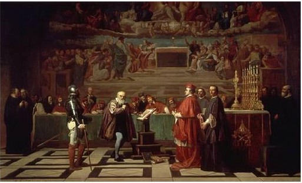

are institutions of the Catholic Church established to combat heresy, started in 1184 in France to root out Cathars and Waldensians in Southern France. In the papal bull Ad Extirpanda of 1252, Pope Innocent IV explicitly authorizes the use of torture to elicit confessions from suspected heretics. Inquisitions were largely abolished after the Napoleonic Wars in Europe, but the office still exists in the Catholic Church, though now called the Congregation of the Doctrine of the Faith. Most sentences seem to have consisted of penances like wearing a cross sewn on one's clothes, going on pilgrimage, etc., though unrepentant heresy was often punished by burning at the stake.
Spanish Inquisition
Inquisitions occur in all lands and colonies where the Catholic Church has authority (except England and Castille), of which the most notorious is the Spanish Inquisition. The Iberian Peninsula in 1492 consists of territories recently reconquered from the Muslims and still retains strong Muslim and Jewish influence. Muslims and Jews are given the choice of leaving, converting, or dying. Many stay and convert, though the Christian authorities doubt that all these conversos will suddenly become and remain orthodox Roman Catholics. So this Inquisition has a special socio-political basis as well as fundamental religious motives. The last execution of the Spanish Inquisition occurs in 1826 when Cayetano Ripoll is garroted for teaching Deism.
Roman Inquisition
After the Protestant Reformation explodes onto the scene, Catholic authorities become suspicious of the vary Renaissance humanism that they earlier encouraged. In 1542 Pope Paul III establishes the Roman Inquisition to examine and proscribe errors and false doctrines. The most famous case it tries is that of Galileo Galilei in 1633, for claiming that the sun is the center of the solar system. Galileo is found “vehemently suspect of heresy,” is threatened with torture if he does not recant his teachings; he recants, and is kept under house arrest until his death in 1642

Galileo interrogated by Cardinal John Bellarmine by Joseph-Nicolas Robert-Fleury